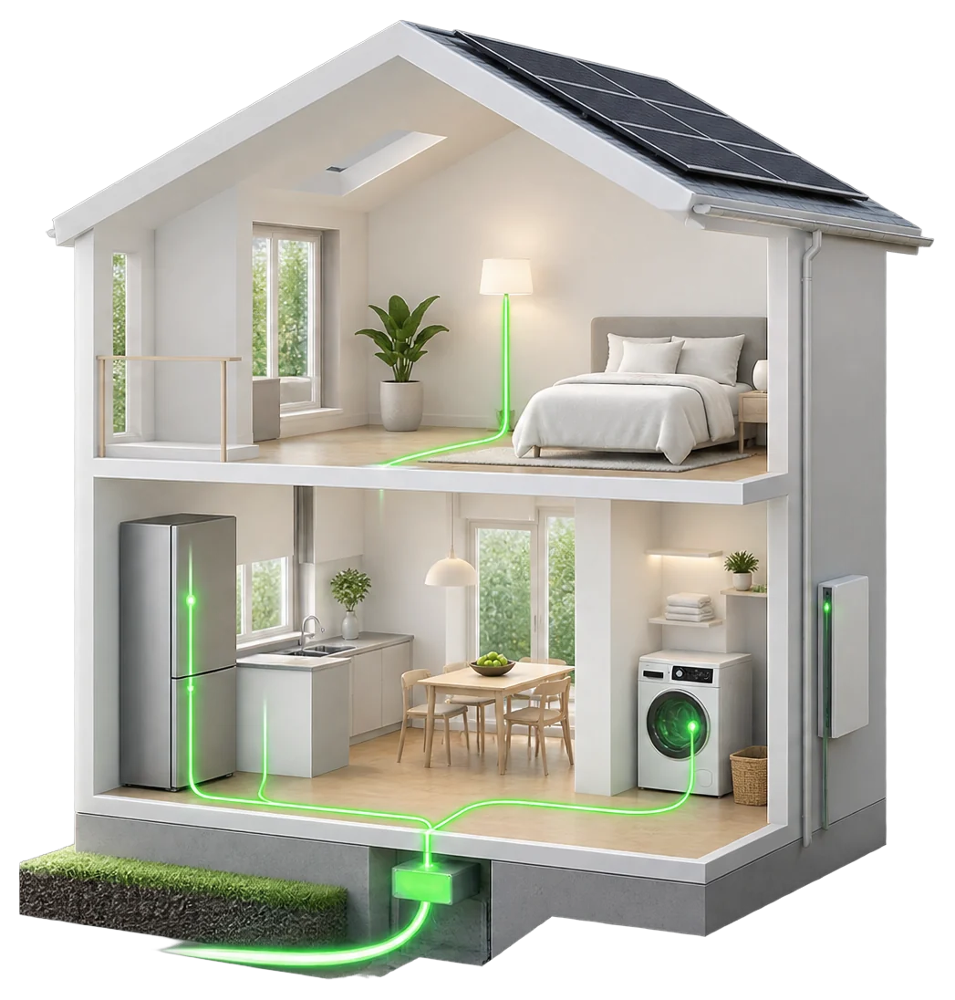
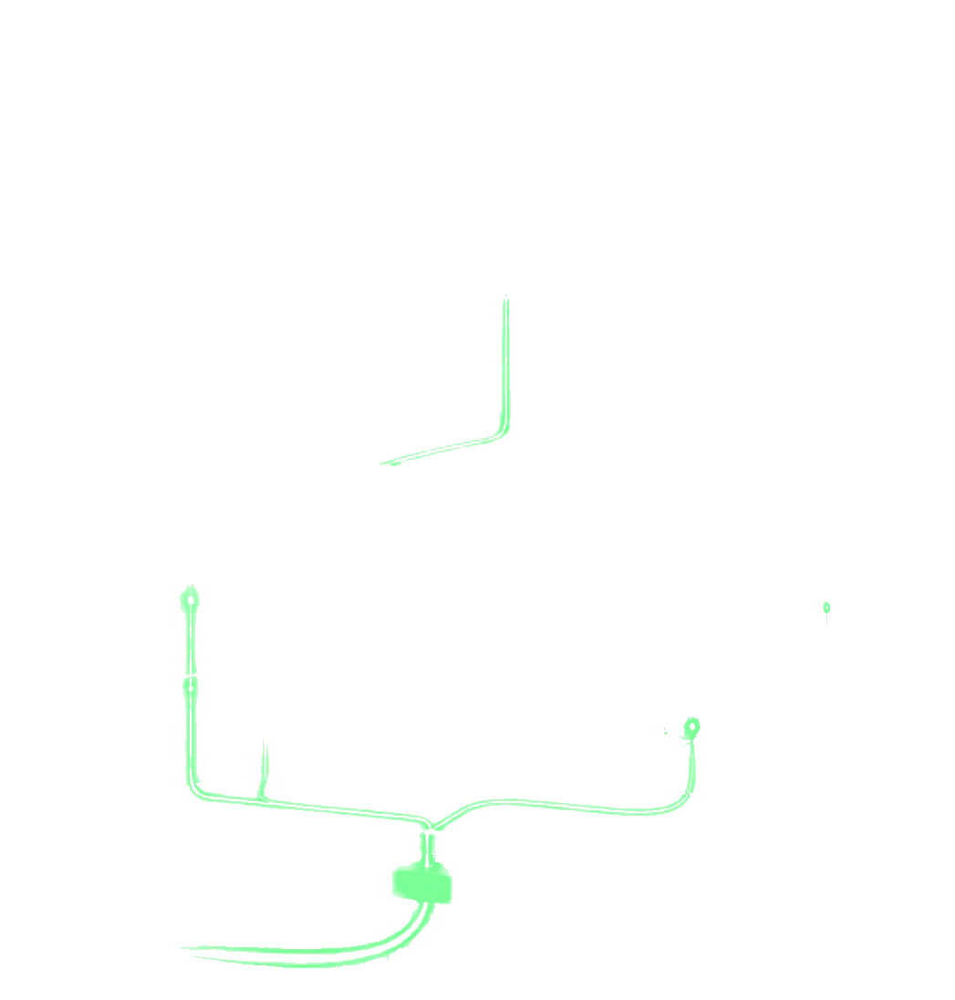
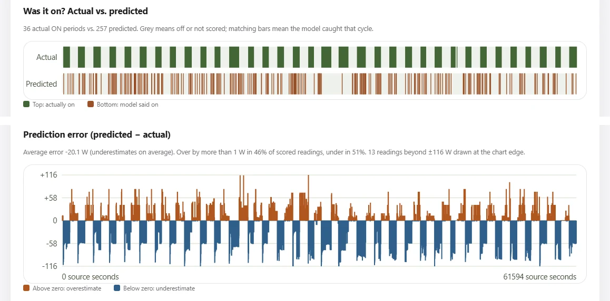
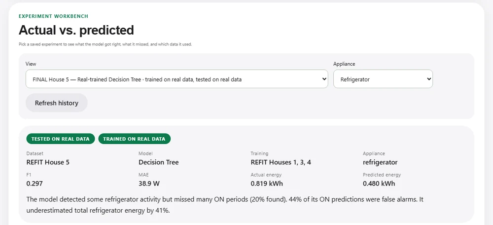

Your home, in watts.
Current watches a home's total electricity and asks a hard question: can a model tell which appliance is running? I tested it on real houses, honestly, including where it failed.
Open source · Python, FastAPI, scikit-learn · real data from the REFIT study


Lamp ~20 W Fridge ~85 W, cycling Washer 2 kW heatingYour meter doesn't see appliances. It sees one wire.
Each appliance has its own rhythm: the fridge cycles, the lamp holds steady, the washer heats in a long block. By the time they reach the meter they are a single line. Pulling them apart again from that line is called non-intrusive load monitoring (NILM).
Illustration of the idea, not measured data. Real recordings are noisier, and many more loads overlap.
It worked on one house. Then I tested a sealed one.
I trained on three real homes from the REFIT study, tuned on a fourth, and kept a fifth sealed. I wrote the test down before opening it, and scored it exactly once.
F1 score for spotting when the fridge is on: 1.0 finds every ON period with no false alarms; 0 finds none.
The score that looked strong on the development house did not survive the sealed one. And a model trained only on my simulator did better than the one trained on real homes.
Both models also underestimated the fridge's energy by 34–41%. The lesson is about method: one development house made the model look far better than it was.
Before any of this, the biggest fix wasn't the model at all. Uneven sensor timing left just 8 usable training windows; a simple, label-blind timing rule recovered 4,368.
So I held out every house in turn, with the plan written down first. Real-trained scores ranged from 0.339 to 0.520 depending on the home, and the simulator model detected the fridge better in 4 of 5 homes, though its power estimates were often worse.

One pipeline, from simulator to sensor.
Simulated homes, replayed REFIT recordings and a future ESP32 sensor all run through the same steps, so a result from one can be compared with another.
- Sourcessimulator · REFIT · sensor
- Timing checksgaps never filled in
- Featurespast readings only
- Modelstree · forest · baseline
- Dashboardwith real vs simulated labels

- Written down first
- Each experiment's plan and pass/fail rule went into Git before the experiment ran.
- Scored once
- The sealed house was opened a single time, after every model choice had been frozen.
- 80 automated tests
- They cover timing, energy, storage, the simulators and the sensor link.
- Sensor-ready
- A token-protected endpoint is ready for an ESP32 board, though no hardware has been validated yet.
What I'm doing next.
- Test across even more homesFive houses are done; next, more of REFIT's 20 houses and longer recordings.
- Compare with a published methodSequence-to-point learning through NILMTK, so the numbers sit next to known results.
- Seal a new test houseHouse 5 has been used once; a fresh one keeps the next result honest.
- Collect my own data, safelyPlug-in energy-monitoring smart plugs feeding Current's sensor endpoint. No mains wiring.
The full story is in the paper.
Method, tables, the sealed test, the every-house follow-up and their limits, in a short paper.